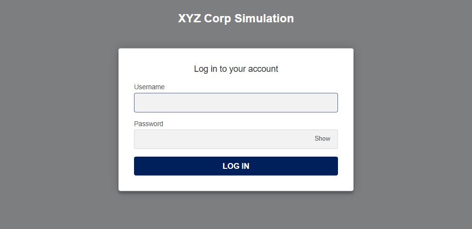
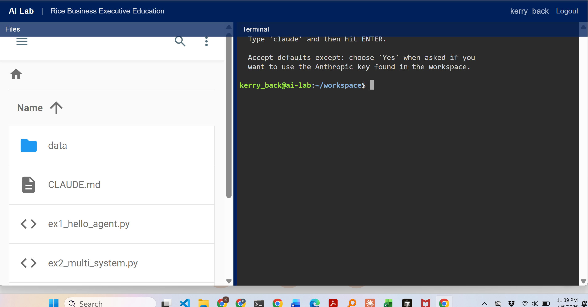

Making Data-Driven Decisions with Agentic AI
AI agents that understand plain English can now generate charts, query databases, write reports, build predictive models, and assemble complete deliverables — all from a single prompt.
This course teaches you to use these tools for:
💬
Sessions 1–2
Personal Productivity
🗄️
Sessions 3–4
Enterprise Data
🏗️
Sessions 5–6
Deployment & Governance
🔮
Sessions 7–8
Prediction & Strategy
Eight sessions over four weeks. Two sessions per week. Each session is 90 minutes and includes a mix of instruction, live demos, hands-on exercises, and group discussion.
What You Will Do
Key Concept: Maker/Checker
A CEO asks: “Which of our customers buy from multiple divisions?” Today, that question takes three weeks and involves six people across four departments. With the XYZ Corp Custom Chatbot, a first draft takes 30 seconds — though verifying the answer still matters.
What the Chatbot Does
What You Will Learn
Deployment
Trust
Governance
Predictive Modeling
Capstone

A custom chatbot for a simulated $500M B2B distributor with 3 divisions, 9 enterprise systems, and a RAG database of corporate documents. Ask questions in plain English — the chatbot answers general questions, writes SQL, merges data, searches documents, and produces deliverables.

Each participant gets a personal workspace with Claude Code, Anthropic’s AI coding tool. Build charts, dashboards, predictive models, and automated workflows. No software installation required.
The goal is not to make you a programmer. It is to make you effective at directing AI, verifying its output, and evaluating AI adoption for your organization.
To prepare
No programming background is required. Familiarity with spreadsheets and basic data concepts is helpful.